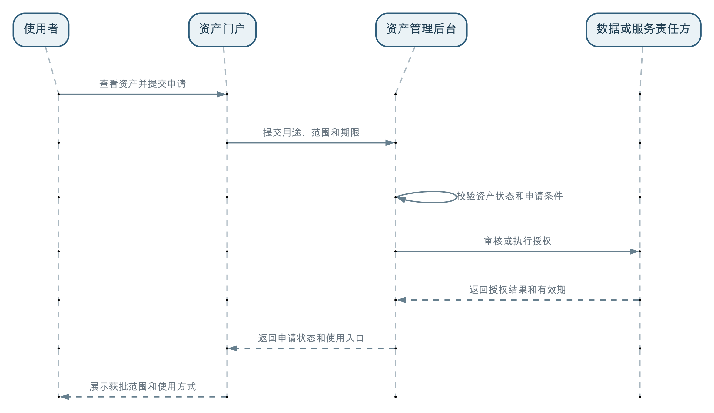

数据资产管理后台主要面向数据资产运营者、数据责任人和治理人员，负责把已有的数据治理成果组织成可发布、可使用、可持续运营的数据资产；资产门户主要面向业务人员、分析人员和开发者，负责资产的发现、申请、获取、使用和反馈。
资产管理后台不是数据生产工具，也不应替代数据开发、数据建模、数据标准、数据质量和数据服务等专业能力。它负责的是资产化过程中的选择、组合、编目、准入、发布和运营。
资产门户也不只是一个展示资产卡片的网站。完整的门户应帮助使用者完成从发现资产、理解资产，到申请权限、获得使用方式，再到评价和反馈的消费闭环。
数据从产生到进入业务场景，通常会经过三类性质不同的工作：
| 工作 | 主要参与者 | 主要工具 | 主要产出 |
|---|---|---|---|
| 数据生产与治理 | 数据工程师、建模人员、质量人员、业务专家 | 数据汇聚、开发、建模、标准、质量和服务工具 | 数据集、模型、指标、标签、服务及治理结果 |
| 数据资产管理 | 数据资产运营者、数据责任人、数据治理专员 | 资产管理后台 | 资产边界、编目信息、发布状态、使用条件和运营机制 |
| 数据资产消费 | 业务人员、分析人员、应用开发者 | 资产门户或数据市场 | 发现、申请、授权、访问、评价和反馈 |
这三类工作互相依赖，但不能由一个系统全部承担。
数据生产与治理解决“怎样形成可信、可用的资源”；资产管理解决“哪些成果值得作为资产持续运营”；资产门户解决“用户怎样找到并使用这些资产”。
不负责替代专业的数据治理工作，但需要检查和组织治理结果。
资产管理后台通常不直接完成：
这些工作应当在相应的专业工具中完成，并由具备专业能力的数据工程师、建模人员、质量人员和业务专家负责。
资产管理后台需要做的是引用这些治理成果，并判断它们是否达到资产化和发布要求。例如：
可以这样区分：
质量工具负责发现和推动修复质量问题；资产管理后台引用质量状态，并决定当前是否满足上架条件。
数据开发人员负责形成模型、指标和服务；资产管理后台负责将这些成果选择、组合、说明并发布为资产。
资产管理后台承担的是资产准入和运营治理，而不是包办全部数据治理。
数据资产运营者从企业数据目录中查找已经形成的数据集、模型、指标、标签、服务或算法成果，判断哪些内容具有明确的用户、场景和持续复用价值。
不是所有资源都需要成为资产。临时表、调试文件、过程缓存和没有稳定用途的中间结果，可以继续作为资源管理，但不必进入资产运营范围。
资产不一定等于一张表或一个文件。一项“供应链库存主题资产”可以由库存明细、库存周转指标和库存查询服务共同组成。
后台需要明确：
资产编目通常包括：
编目不是重新录入一套技术元数据。表结构、字段、指标定义和服务版本应继续引用相应专业系统中的权威事实。
资产管理后台需要确认资产是否具备面向目标用户持续提供的条件，例如：
准入条件不必对所有资产完全相同。公开统计文件、内部经营指标和包含个人信息的客户明细，显然需要不同的治理深度和发布条件。
后台还需要管理：
这些内容属于资产持续运营，第045问还会进一步展开。
可能需要参与，但它不是资产生产者的主要工作台。
资产生产者可以在后台中：
但数据汇聚、建模、指标开发和质量修复仍然回到专业工具中完成。
在规模较小的组织里，同一个人可能同时承担数据工程师、数据责任人和数据资产运营者等多个角色。这是人员兼职，不代表系统职责可以混为一体。
资产门户面向数据消费者，应围绕用户的真实使用过程设计。
门户应支持：
门户展示的是当前用户允许发现的已发布资产，不是企业内部全部资源的镜像。
资产详情需要帮助使用者判断“是否适合我的场景”，而不只是展示名称和责任部门。
重要信息包括：
对于允许预览的资产，门户可以提供字段、样例、指标口径、服务说明或应用截图，但预览不能绕过安全和权限控制。
门户可以让用户填写：
申请提交后，用户应能够查看审核状态、有效期限和当前可用入口。
获得授权后，门户应提供与资产类型匹配的入口，例如：
用户还应能够评价资产、报告问题、提出需求并订阅变更通知。
三者解决不同的问题：
专业生产和治理工具
↓ 形成数据、模型、指标、标签和服务
企业数据目录
↓ 统一关联和发现治理成果
资产管理后台
↓ 选择、组合、编目、审核和发布
数据资产目录
↓ 面向消费者展示
资产门户或数据市场
↓
申请、授权、使用和反馈企业数据目录可以包含发现、开发和治理中的各类资源；资产管理后台从中选择值得持续运营的成果；资产门户只展示已经发布且当前用户允许发现的资产。
资产门户产生的申请、使用和反馈信息，又会回到资产管理后台，帮助数据资产运营者调整治理优先级、发布条件和运营策略。
资产名称、组成内容、发布版本、质量状态、责任、权限和使用条件，应有统一的事实来源。
资产门户可以根据用户角色和使用场景重新组织展示，但不能自行维护另一套资产事实。否则容易出现：
正确的关系应当是：后台管理资产事实和生命周期，门户提供面向消费者的视图和交互。
资产已经发布，不代表所有人都可以看到，更不代表所有人可以直接访问内容。
可以区分以下状态：
| 状态 | 用户能够做什么 |
|---|---|
| 不可发现 | 搜索和目录中不展示资产及其存在 |
| 可发现但未授权 | 可以查看允许公开的说明并提交申请 |
| 已授权 | 可以使用获批范围内的数据、服务或应用 |
| 授权到期或被撤销 | 可以查看历史申请，但不能继续访问受控内容 |
对于一般内部资产，可以允许更多员工查看资产说明，再根据用途申请访问；对于高度敏感资产，连资产名称、字段和样例都可能只对特定人员可见。
门户中的“查看详情”“预览数据”和“正式使用”也应分别控制，不能把看见资产卡片等同于获得数据访问权。
资产门户负责提供申请体验，资产管理后台负责处理资产运营流程，真正的数据访问控制仍应由相应的数据源、服务或授权体系执行。
一个较完整的过程是：

门户不应自行决定用户可以访问哪些数据，也不应因为申请表提交成功就提前展示受控内容。
对于低风险资产，审批可以由规则自动完成；对于敏感数据或特殊用途，可以由资产责任人、安全人员或相关业务部门审核。流程复杂度应与风险匹配，而不是所有资产都采用相同的多级审批。
资产管理后台负责版本和生命周期事实，资产门户负责把与使用者相关的变化清楚传达出去。
后台需要处理：
门户需要展示：
用户不应在毫无通知的情况下发现字段消失、指标口径改变或者 API 无法调用。
只有资产分类和详情页面，通常只能称为资产门户或资产目录前台。
当它进一步具备以下能力时，才更接近数据市场或数据产品市场：
这里的“市场”不一定意味着对外交易或收费，重点是建立供需双方可以持续互动的数据运营机制。
某制造企业希望让采购、生产、销售和仓储部门统一掌握库存情况。
数据团队汇聚采购、生产、销售和仓储系统的数据，建立库存明细模型，计算现有库存、可用库存、库存周转天数和缺货风险等指标，并发布受控查询服务。
这些工作分别在数据开发、建模、指标、质量和服务等专业工具中完成，不由资产管理后台计算。
数据资产运营者将以下内容组织成“供应链库存主题资产”：
后台明确资产责任人、适用范围、更新频率、已知限制和申请条件，并确认数据质量和服务入口满足发布要求。
采购人员可以搜索缺货风险资产，销售人员可以查找可用库存，仓储人员可以查看库存周转指标。不同角色看到相同资产的业务说明，但需要按照用途申请不同范围的数据和服务权限。
用户发现库存状态延迟后，可以在门户提交问题；资产管理后台将问题转交数据责任人和生产团队处理，并向受影响用户反馈结果。
这个案例说明，专业工具负责生产和治理，资产管理后台负责资产化和运营，资产门户负责消费体验和反馈闭环。
资产管理后台负责引用治理结果、执行资产准入和运营管理，不替代数据开发、建模、标准、质量和服务工具。
门户面向消费者，后台面向管理者。用户、功能和权限边界都不同，不能只换一套页面样式就视为两个系统。
全部资源应在企业数据目录中管理。门户只展示经过治理和发布、并允许当前用户发现的资产。
上架、可发现、可预览和可访问是不同状态，正式使用仍需遵守授权和用途限制。
门户负责收集申请和展示结果，真正的访问控制需要由资产管理流程和数据或服务责任方执行。
两套事实会产生状态、版本和责任冲突。门户可以有不同展示视图，但必须引用统一资产事实。
点击量只能说明关注度。资产是否产生业务价值，还要结合实际使用、业务效果、维护成本和用户反馈判断。
专业数据工具负责生产和治理数据，企业数据目录负责统一关联和发现成果，资产管理后台负责把值得持续运营的成果组织成资产，资产门户负责让用户发现、申请、使用和反馈。
资产管理后台不是万能的数据治理平台，资产门户也不是后台的简单只读页面。只有明确生产、管理和消费三类职责，并让治理结果、资产事实和用户反馈在它们之间顺畅流动，数据资产才能真正进入业务场景并持续产生价值。
← 上一问：043 企业数据目录如何连接各类资源目录，并支撑数据资产目录？ · 返回目录 · 下一问：045 数据资产如何评价和持续运营，为什么编目上架不是终点？ →